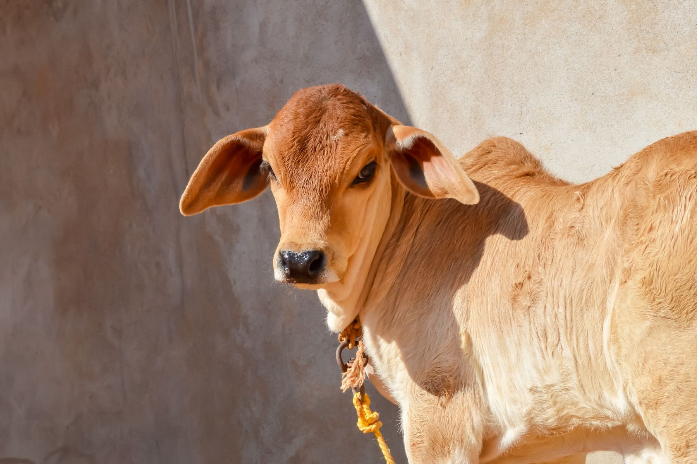
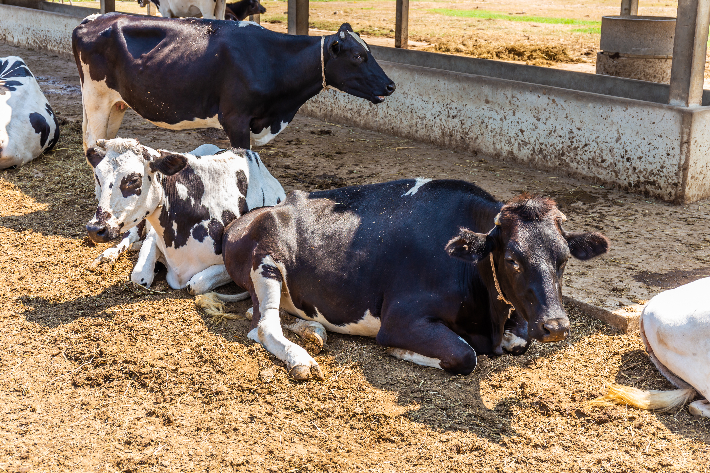
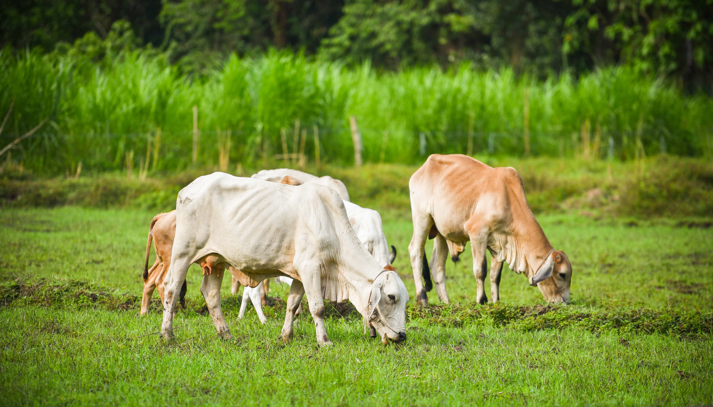

सेवा, करुणा और समर्पण से जुड़ी सच्ची घटनाएँ जो हमें आगे बढ़ने की प्रेरणा देती हैं।

सड़क किनारे गंभीर रूप से घायल अवस्था में मिली एक गौ माता को संस्था की टीम द्वारा तत्काल उपचार प्रदान किया गया। निरंतर सेवा और देखभाल के परिणामस्वरूप आज वह स्वस्थ जीवन जी रही है।

कई वृद्ध एवं असहाय गायों को हमारी गौशाला में सुरक्षित आश्रय प्रदान किया गया, जहाँ उन्हें नियमित आहार, चिकित्सा एवं स्नेहपूर्ण वातावरण प्राप्त होता है।

स्थानीय ग्रामीणों एवं स्वयंसेवकों के सहयोग से गौ सेवा जागरूकता कार्यक्रम आयोजित किए गए, जिससे समाज में करुणा एवं सेवा भाव को बढ़ावा मिला।
आपकी सहायता से और भी कई जीवन बदले जा सकते हैं।
गौ सेवा में योगदान दें